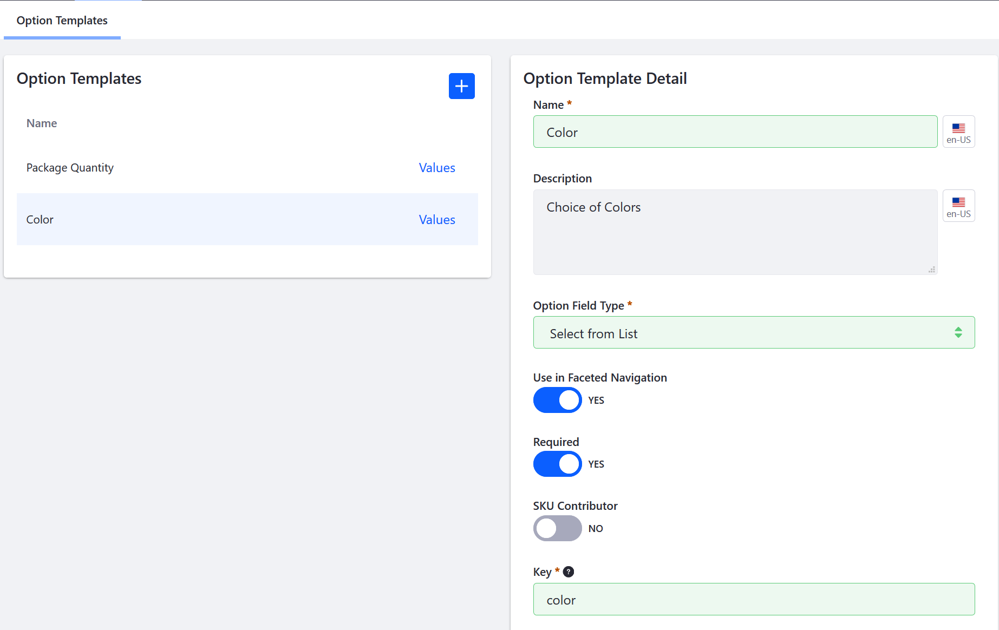
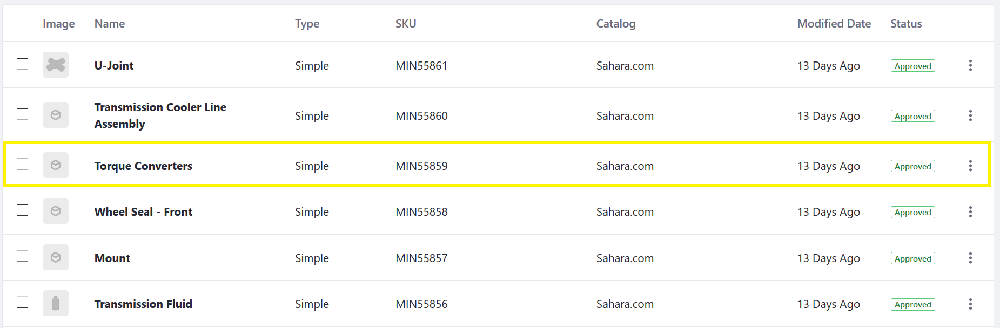

Customizing Your Products with Product Options¶
Option Templates and Product Options provide an easy and flexible way to offer products that have a variety of options such as size, quantity, and color.
Before applying an option to a product, it is necessary to create an option template first.
An option template can be applied to any product in the catalog. This makes it easy to apply frequently-used options to a large number of products. This article describes how to create an option template. Option Templates are created independently from a product so that changes to the template do not affect the product』s description.
Creating an Option Template¶
To create an option template:
Navigate to the Control Panel → Commerce → Product.
Click on the Options tab. This displays a list of existing templates on the left of the page and the Option Template Detail form on the right.
Click the (+) to add an Option Template.
Enter the following:
Title: Color
Description: Choice of colors
Field Type: Select from List
Use in Faceted Navigation: Yes
Required: Yes
SKU Contributor: No
Key: (automatically generated)

Click Save.
The Option Template has been added and can be applied to all products.
Note 1: When Use in Faceted Navigation is switched to Active, this enable to allow search results to be filtered for this option.
Note 2: A SKU contributor can be assigned a unique price and other attributes for each variant via SKUs. If enabled, the option must have a SKU in order to be sold.
Adding Option Values¶
Depending on the Field Type used in the template, you may need to create values for that option. In this example, Select from List requires Option Values, such as the different product colors.
To add multiple Option Values:
Click the Values link next to Color.
Click the (+) Add Option Values button.
Enter the following:
Name: Black
Priority: 1.0
Key: (autogenerated from the Name field)

Click Save.
Black is now added to the Color options. To add more colors, repeat the steps and increment the priority. For example, you can add White and priority set as 2.0 followed by Blue with priority 3.0, and so forth. Remember the priority field determines the order in which the options are displayed with the lowest values being displayed first.
Applying an Option Template to a Product¶
Once you apply a template to a product, you can make any changes to the product』s option. These changes will not affect the option template or any other product.
To apply an option template to a product:
Navigate to the Control Panel → Commerce → Products.
Click the Products tab.
Click on any product listed there. For example, if the Minium accelerator was used to create the site, one sample product is the Torque Converters.

Click Torque Converters.
Click the Options tab.

Click the (+) button to add an Option.
Check the box for Package Quantity.
Enter 1.0 in the Priority field.

Click Save.
The Option Template is now applied; when the product is displayed on the catalog page, buyers may now select different quantities for Torque Converters.
Additional Information¶
Note that you can apply more than one option template per product and each option has its own unique display priority. In addition to Package Quantity (created by default in the Minium accelerator), there is the Color Option created in the Options Template section above. You may also change the Option Values on this screen without having to change the template itself.
Click the Values link next to Package Quantity.
Click the (+) button to add a new value.
Enter the following:
- Name: 60
- Priority: 5.0
- Key: (autogenerated)
Click Save.

The new option has been added to the possible quantities a buyer can choose from.